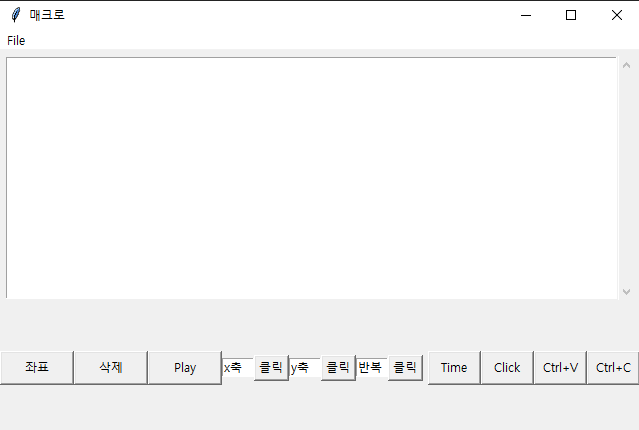
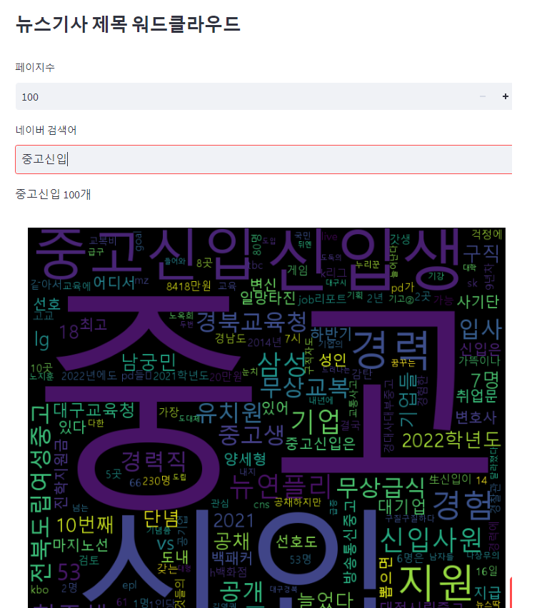
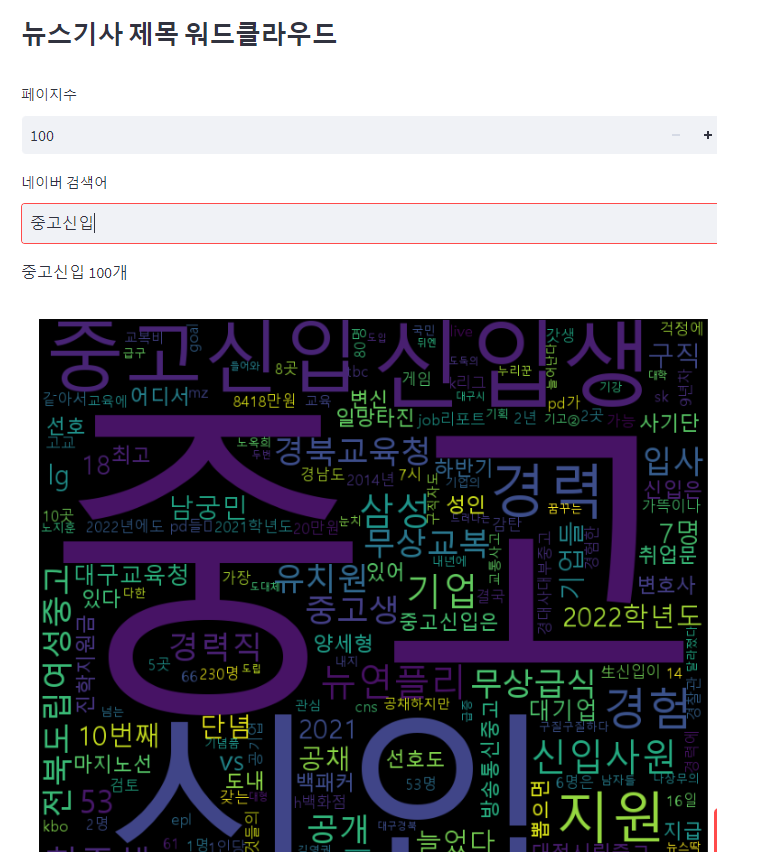

PROJECTS
매크로 다운로드.zip
좌표를 지정하여 마우스 클릭 ctrl +c,v 기능
매크로 좌표 등 명령어를 엑셀에 저정하여 불러오기 가능

Wordcolud
인터넷 크롤링을 기반으로 자연어 분석을 통한 워드클라우드 작성
좌표를 지정하여 마우스 클릭 ctrl +c,v 기능
매크로 좌표 등 명령어를 엑셀에 저정하여 불러오기 가능

Wordcolud
인터넷 크롤링을 기반으로 자연어 분석을 통한 워드클라우드 작성